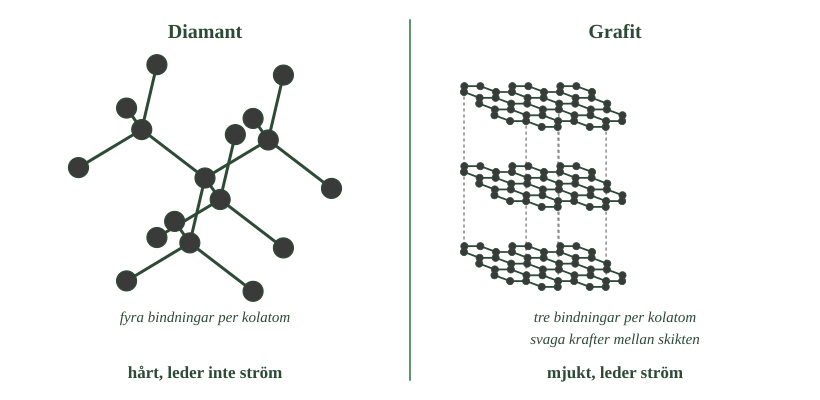
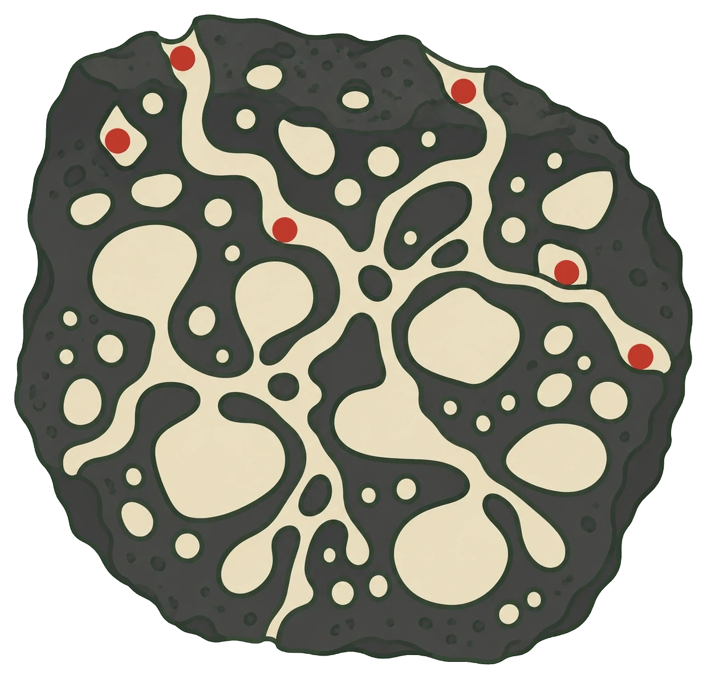
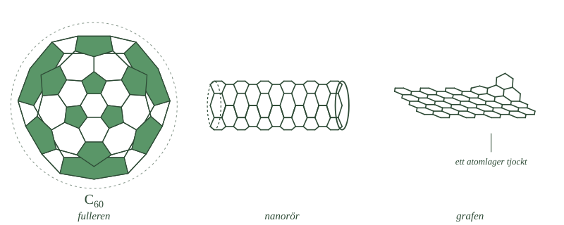

- Vad menas med att ett grundämne kan finnas i flera former?
- Vilka egenskaper skiljer diamant från grafit?
- Hur skiljer sig en kolatom i diamant från en kolatom i grafit?
- Vad är det då som avgör ämnenas egenskaper?
- Varför är detta en viktig princip även utanför kolkemin?
När atomer av olika grundämnen binds samman bildas nya ämnen. Men även atomer av samma grundämne kan sitta ihop på olika sätt och ge ämnen med helt olika egenskaper. Kol är det tydligaste exemplet. Rent kol kan finnas som diamant, grafit, grafen och fullerener — alla består bara av kolatomer.
Rent kol finns i flera former med olika egenskaper
Ett grundämne kan finnas i flera olika former
Vanligtvis tänker man sig att ett grundämne är en enda sak. Järn är järn, syre är syre.
Men det stämmer inte alltid. Ibland kan atomerna av samma grundämne sitta ihop på flera olika sätt. Då bildas flera olika ämnen, fast alla består av exakt samma sorts atomer.
Kol är det tydligaste exemplet. Rent kol kan finnas som diamant, som grafit, som grafen och som fullerener.
Diamant och grafit är varandras motsatser
Diamant är genomskinligt. Det är det hårdaste ämne vi känner till. Det leder inte elektrisk ström.
Grafit är mörkt och matt. Det är så mjukt att det lossnar om man drar det mot ett papper. Det leder elektrisk ström.
Två ämnen kan knappast vara mer olika. Ändå innehåller båda bara kolatomer, och ingenting annat.
Skillnaden sitter inte i atomerna
Här är det lätt att tänka fel. Man kan tro att det måste vara något särskilt med kolatomerna i en diamant — att de på något sätt är finare eller hårdare.
Så är det inte. En kolatom i en diamant är exakt likadan som en kolatom i ett blyertsstift. Det går inte att se någon skillnad på dem.
Det är mönstret som avgör
Skillnaden ligger i hur atomerna sitter ihop. Samma byggstenar kan sättas samman på olika sätt, och då får man material med helt olika egenskaper.
Tänk på legobitar. Samma låda kan bli ett torn eller en platt platta. Bitarna är desamma, men det du byggt är inte det.
Det här är en av kemins viktigaste tankar: ett ämnes egenskaper beror både på vilka atomer det innehåller och på hur atomerna är bundna till varandra.
- Vad menas med att ett grundämne kan finnas i flera former?
- Vilka egenskaper skiljer diamant från grafit?
- Hur skiljer sig en kolatom i diamant från en kolatom i grafit?
- Vad är det då som avgör ämnenas egenskaper?
- Varför är detta en viktig princip även utanför kolkemin?
När atomer av olika grundämnen binds samman kan nya ämnen med nya egenskaper bildas. Men även atomer av samma grundämne kan ibland ordnas på olika sätt och på så sätt bilda ämnen med helt olika egenskaper. Kol är ett tydligt exempel på detta.
Rent kol kan bland annat förekomma som diamant, grafit, grafen och fullerener. Alla består enbart av kolatomer. Det som skiljer dem åt är alltså inte vilka atomer de innehåller, utan hur kolatomerna är bundna till varandra och hur de är ordnade.
Rent kol finns i flera former med olika egenskaper
Samma grundämne kan förekomma i flera former
När samma grundämne kan förekomma i flera olika former brukar formerna kallas allotroper. Diamant och grafit är två av kolets mest välkända allotroper. Kol har fler allotroper än de flesta andra grundämnen.
Diamant och grafit har helt olika egenskaper
Både diamant och grafit består enbart av kolatomer, men deras egenskaper är mycket olika. Diamant är genomskinligt, hårt och leder inte ström. Grafit är mörkt, mjukt, leder ström och går lätt att gnida av mot ett papper.
Det finns inget i atomerna som förklarar skillnaden. En kolatom i en diamant är exakt likadan som en kolatom i grafit.
Det är ordningen mellan atomerna som avgör
Förklaringen finns i hur kolatomerna sitter ihop. Ett ämnes egenskaper bestäms alltså inte bara av vilka atomslag som ingår, utan också av hur atomerna är bundna och ordnade.
Detta är en viktig princip inom kemin, och den gäller långt utanför kolets värld. Samma slags byggstenar kan ge mycket olika material om de sätts samman på olika sätt. Det är också skälet till att kemister ritar strukturformler och inte nöjer sig med molekylformler.
---
Diamanter är inte för evigt
Standardtexten ställer diamant och grafit sida vid sida som två likvärdiga former av kol. Det är en rimlig bild, men den döljer något överraskande: de två formerna är inte lika stabila.
Vid vanligt tryck och vanlig temperatur är grafit den form som kol helst antar. Diamanten ligger högre i energi. Det betyder att en diamant, kemiskt sett, långsamt borde omvandlas till grafit.
Att det inte märks beror inte på att omvandlingen är omöjlig, utan på att den är extremt långsam. För att komma igång måste ett stort antal bindningar brytas samtidigt, och den tröskeln passeras i princip aldrig vid rumstemperatur. Omvandlingen tar längre tid än jordens ålder.
Diamanter bildas därför inte där de är stabila, utan där trycket är så högt att förhållandet kastas om — djupt nere i jordens mantel. De diamanter vi hittar har förts upp till ytan av vulkanisk aktivitet och sitter sedan fast i sin form.
Ett ämne som ligger kvar i en form som inte är den mest stabila kallas metastabilt.
Om modellen. Standardnivån behandlar diamant och grafit som två jämbördiga alternativ, och till det avsnittet handlar om — att struktur ger egenskaper — fungerar det fint. Men "olika former av samma grundämne" antyder att formerna vore likvärdiga. Det är de inte. Den ena är kolets vilotillstånd, den andra ett tillstånd som råkat bli fast.
- Hur många andra kolatomer binder varje kolatom till i diamant?
- Varför räcker det inte att bryta några få bindningar för att repa en diamant?
- Vad används diamantens hårdhet till?
- Hur är kolatomerna ordnade i grafit?
- Varför lossnar grafit när man drar det mot ett papper?
Diamant är hårt och grafit är mjukt av samma skäl: bindningarnas mönster
I diamant binder varje kolatom till fyra andra
I en diamant sitter varje kolatom ihop med fyra andra kolatomer. Bindningarna går åt fyra olika håll i rummet, ungefär som strålar från en mittpunkt.
Nästa kolatom binder på samma sätt till fyra nya. Och nästa. Så fortsätter det genom hela kristallen.
Resultatet är ett enda stort nätverk. Man kan säga att hela diamanten är en enda molekyl.
- Välj en kolatom i vänstra bilden och räkna strecken från den. Gör samma sak till höger.
- Leta efter de prickade linjerna. Var i bilden finns de?
- Grafit går att gnida av mot ett papper, men inte diamant. Vilken del av bilden förklarar det?

Därför är diamant så hårt
För att repa eller bryta en diamant räcker det inte att lossa på några få atomer. Man måste bryta ett stort antal starka bindningar samtidigt, och bindningarna håller åt alla håll.
Det finns ingen svag riktning att attackera. Därför är diamant det hårdaste ämne vi känner till.
Hårdheten är användbar. Diamanter sitter i borrkronor och i verktyg som skär i glas och sten. Slipade diamanter används också i smycken.
Diamanter behöver inte komma ur marken. De går att tillverka genom att kol utsätts för mycket högt tryck och hög temperatur.
I grafit binder varje kolatom till bara tre andra
I grafit sitter varje kolatom ihop med tre andra kolatomer i stället för fyra. De bildar sexkantiga ringar som ligger sida vid sida, som ett platt nät.
Näten ligger staplade ovanpå varandra i tunna skikt.
Därför är grafit mjukt
Inne i ett skikt är bindningarna starka. Men mellan skikten är krafterna svaga.
Det betyder att skikten kan glida över varandra, ungefär som kortlekens kort. Ett skikt kan också lossna helt.
Det är precis det som händer i en blyertspenna. Stiftet är grafit. När du drar det mot pappret lossnar skikt som blir kvar som ett mörkt streck.
Grafit leder dessutom elektrisk ström, vilket diamant inte gör.
Samma atomer, olika mönster
Det är alltså samma kolatomer i båda materialen. I diamant bildar de ett starkt nätverk åt alla håll. I grafit bildar de starka skikt som hålls ihop svagt.
Hela skillnaden mellan det hårdaste ämnet vi känner till och något som lossnar mot ett papper sitter i mönstret.
- Hur många andra kolatomer binder varje kolatom till i diamant?
- Varför räcker det inte att bryta några få bindningar för att repa en diamant?
- Vad används diamantens hårdhet till?
- Hur är kolatomerna ordnade i grafit?
- Varför lossnar grafit när man drar det mot ett papper?
Diamant är hårt och grafit är mjukt av samma skäl: bindningarnas mönster
I diamant binder varje kolatom till fyra andra
I diamant binder varje kolatom till fyra andra kolatomer. Bindningarna går åt olika håll och bildar ett stort tredimensionellt nätverk. Hela diamantkristallen kan ses som en enda sammanhängande struktur av starka kovalenta bindningar.
För att repa eller deformera diamanten måste många av dessa bindningar brytas. Därför är diamant det hårdaste ämne vi känner till. Just hårdheten används: diamanter sitter i borrkronor och i verktyg för att skära glas och sten. Slipade diamanter används också i smycken. Diamanter kan dessutom tillverkas på konstgjord väg, genom att kol utsätts för mycket högt tryck och hög temperatur.
I grafit binder varje kolatom till tre andra
I grafit binder varje kolatom till tre andra kolatomer och bildar platta nätverk av sexkantiga ringar. Nätverken ligger ovanpå varandra som tunna skikt.
Inne i varje skikt är bindningarna starka. Mellan skikten är krafterna däremot mycket svagare. Skikten kan därför glida över varandra och lossna lätt. Det är den egenskapen man använder i blyertspennan: stiftet består av grafit, och när det dras mot papperet lossnar skikt som blir kvar som ett mörkt streck.
Grafit leder också elektrisk ström. När varje kolatom bildat tre bindningar finns elektroner kvar som kan röra sig över skiktet.
Skillnaden ligger i mönstret, inte i atomerna
Det är samma kolatomer i båda materialen. I diamant bildar de ett starkt nätverk i alla riktningar. I grafit bildar de starka skikt som hålls samman svagt med varandra.
---
Den fjärde elektronen förklarar varför grafit leder ström
Standardtexten säger att grafit leder ström eftersom det finns elektroner som kan röra sig. Det är sant men ofullständigt, och frågan varför de kan röra sig har ett tydligt svar.
En kolatom har fyra elektroner att binda med. I diamant används alla fyra till bindningar mot fyra grannar. Varje elektron sitter låst i en bindning, och ingen är fri att förflytta sig. Därför leder diamant inte ström.
I grafit binder varje kolatom till bara tre grannar. Tre elektroner går åt till det. Den fjärde blir över. De överblivna elektronerna hör inte till någon enskild bindning utan rör sig fritt över hela skiktet. När man lägger på en spänning vandrar de, och det är elektrisk ström.
Detta förklarar också en annan skillnad. Grafit leder ström längs skikten men mycket sämre tvärs igenom dem, eftersom elektronerna rör sig inuti ett skikt och inte hoppar mellan dem. Grafit leder alltså olika bra i olika riktningar.
Samma överblivna elektroner ger grafen dess ledningsförmåga, och de gör också att grafit är mörkt: elektronerna absorberar ljus av alla våglängder. Diamant, där alla elektroner sitter låsta, släpper igenom ljuset och är genomskinlig.
Om modellen. Standardnivån säger "det finns elektroner som kan röra sig" och stannar där. Den fjärde elektronen är det som binder ihop grafitens tre mest kända egenskaper — att den leder ström, att den är mörk och att den leder olika bra åt olika håll. En och samma orsak, tre följder.
- Vad betyder det att ett material är amorft?
- Vad är det hos aktivt kol som gör det användbart?
- Var används aktivt kol?
- Vilken form har en fulleren, och hur många kolatomer har den vanligaste?
- Hur tjockt är grafen, och vad klarar materialet trots det?
Amorft kol, fullerener och grafen är kolets övriga former
Amorft kol har inget regelbundet mönster
Diamant och grafit har båda ett tydligt mönster som upprepas.
Men kol kan också finnas utan något sådant mönster. Då kallas det amorft kol. Ordet amorf betyder ungefär formlös.
Sot och träkol innehåller mycket amorft kol. Där finns små områden som liknar grafit, men de ligger huller om buller och bildar ingen stor sammanhängande kristall.
Aktivt kol är fullt av hålrum
Om man behandlar träkol på rätt sätt blir det fullt av små hålrum och kanaler. Då kallas det aktivt kol.
Hålrummen gör att materialet får en väldigt stor yta. Ett enda gram aktivt kol kan ha lika stor yta som en fotbollsplan, eftersom ytan finns inuti alla små hål.
Ämnen som passerar förbi fastnar på den ytan. Det gör aktivt kol användbart. Det sitter i filter i gasmasker, och används inom sjukvården vid vissa förgiftningar, där det binder giftet i magen innan kroppen hinner ta upp det.
- Följ en av kanalerna från ytan och in i materialet.
- Var i bilden ligger de röda partiklarna — i själva kolet eller i hålrummen?
- Ett gram aktivt kol kan ha lika stor yta som en fotbollsplan. Vad i bilden gör det möjligt?

Fullerener är burar av kolatomer
I en fulleren sitter kolatomerna ihop i en sluten form, som ett skal utan innehåll.
Den mest kända fullerenen består av 60 kolatomer och skrivs \(\ce{C60}\). Den är byggd av femkantiga och sexkantiga ringar och ser nästan ut som en liten fotboll.
Kolatomer kan också bilda långa rör, nanorör. De är mycket starka för sin vikt och leder elektrisk ström. De används i elektronik och i nya material.
Grafen är ett enda skikt grafit
Grafit består av skikt som ligger på varandra. Om man tar loss ett enda av de skikten får man grafen.
Grafen är alltså ett nät av sexkantiga ringar som bara är en atom tjockt. Tunnare än så kan ett material inte bli.
Trots att det är så tunt är grafen ungefär 200 gånger starkare än stål. Det är dessutom genomskinligt och går att böja, och det leder både ström och värme mycket bra.
- Räkna femkanterna i fullerenen. Sitter två femkanter någonsin bredvid varandra?
- Jämför nätet i grafen med ett av skikten i förra bilden.
- Vad skulle hända med arket längst till höger om man rullade ihop det?

- Vad betyder det att ett material är amorft?
- Vad är det hos aktivt kol som gör det användbart?
- Var används aktivt kol?
- Vilken form har en fulleren, och hur många kolatomer har den vanligaste?
- Hur tjockt är grafen, och vad klarar materialet trots det?
Amorft kol, fullerener och grafen är kolets övriga former
Amorft kol saknar regelbunden struktur
En form av kol kallas amorft kol. Ordet amorf betyder att materialet saknar ett regelbundet mönster över längre avstånd. Sot och träkol innehåller stora mängder sådant kol. Strukturen kan innehålla små områden som liknar grafit, men de ligger oregelbundet och bildar ingen stor kristall.
Aktivt kol har en mycket stor yta
Behandlas träkol så att det blir fullt av porer får man aktivt kol. Porerna gör att materialet får en enorm yta i förhållande till sin vikt. Ämnen som passerar fastnar på den ytan. Därför används aktivt kol i filter i gasmasker, och inom sjukvården vid vissa förgiftningar, där det binder giftet i magen innan kroppen hinner ta upp det.
Fullerener är slutna burar av kolatomer
I fullerener sitter kolatomerna ihop i slutna strukturer. Det mest kända exemplet består av 60 kolatomer, \(\ce{C60}\), och har formen av en nästan klotformad bur av femkantiga och sexkantiga ringar — ungefär som en fotboll. Kolatomer kan också bilda långa nanorör, som är mycket starka för sin vikt och leder elektrisk ström. De används i elektronik och i nya material.
Grafen är ett enda skikt grafit
Grafen är ett enda lager av grafit: ett nät av sexkantiga ringar som bara är en atom tjockt. Trots det är grafen omkring 200 gånger starkare än stål. Det är dessutom genomskinligt och böjligt, och leder både ström och värme mycket bra.
Aktivt kol tar inte upp ämnen, det fångar dem på ytan
Standardtexten säger att ämnen "fastnar på ytan" i aktivt kol. Formuleringen är vald med avsikt, för det är lätt att tro något annat: att kolet suger upp giftet ungefär som en svamp suger upp vatten.
Det är två olika saker, och de har olika namn.
När ett ämne tas upp i ett material och fördelar sig genom hela dess volym kallas det absorption. Svampen som suger upp vatten absorberar. Tarmen som tar upp näringsämnen absorberar.
När ett ämne i stället fastnar på en yta och stannar där kallas det adsorption. Det är vad aktivt kol gör. Molekylerna binder till porernas insida och tränger aldrig in i själva kolet.
Skillnaden är inte bara språklig. Vid absorption avgörs kapaciteten av materialets volym — en större svamp rymmer mer vatten. Vid adsorption avgörs den av materialets yta.
Och det förklarar varför aktivt kol tillverkas som det gör. Porerna tillför ingen massa, de tillför yta. Ett gram kan nå flera hundra kvadratmeter. Ett massivt kolstycke med samma vikt skulle ha en yta på några kvadratcentimeter och vore i stort sett verkningslöst.
Om modellen. "Fastnar på ytan" är inte en förenkling av adsorption, utan en korrekt beskrivning av den. Det som saknas på Standardnivå är begreppet och kontrasten mot absorption. Skillnaden blir viktig längre fram i boken, när kroppens upptag av vitaminer och mineraler behandlas — där handlar det om absorption, och det är inte samma sak.
Laddar övningskort…
Laddar frågor ...